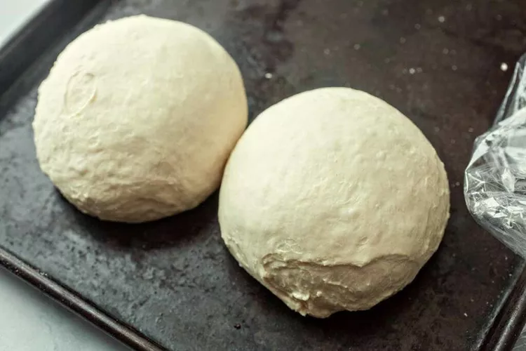

How to make tasty pizza
RESULTS
step 1: preheat the oven to 500°F:
.jfif)
step 2: For the Quick Pizza Sauce:
- 1/2 cup tomato sauce (no salt) 1
- 1/2 teaspoon kosher salt
- 1/2 teaspoon ground black pepper
- 1/2 teaspoon granulated garlic
- 1/2 teaspoon granulated onion
- /4 teaspoon red pepper flakes
- 1 teaspoon olive oil

image: nick evans
step 3 Roll out the dough
Roll out dough on a lightly floured surface. If it's hard to roll,
let it rest for 5 minutes so it can come to room temperature.
For a large pizza, I like to
roll my dough into about a 14-inch diameter circle.
image: nick evans
step 4 add the toppings
Transfer the dough to a lightly dusted pizza peel. Alternatively, fit it into a large cast-iron.
Add sauce in a light layer all over the pizza, leaving about
1/4-inch crust around the edges. Chop half of the pepperoni and
sprinkle it over the sauce.
Top the pizza with grated cheese and the rest of the pepperoni.
Season with black pepper.

image: nick evans

image: nick evans

image: nick evans
cook the pizza
If you're using a pizza stone, carefully slide pizza into the center of the preheated pizza stone.
Cook for 6 minutes, then rotate the pizza halfway so it cooks evenly.
Cook for another 6 to 8 minutes, or until the crust is golden brown and charred in spots.
If you're using a skillet, press the dough into a cast iron skillet and add toppings. Place the skillet over
a high heat burner for 2 minutes to get it preheated and get the crust cooking right away. Then transfer to a 500 °F oven and bake
for 10 to 12 minutes, or until the crust is golden brown.
slice and serve
Use pizza peel to slide pizza out onto a cutting board.
Let the pizza rest for a minute and slice into pieces.
Season with fresh oregano (optional).
Serve while warm with a side salad.